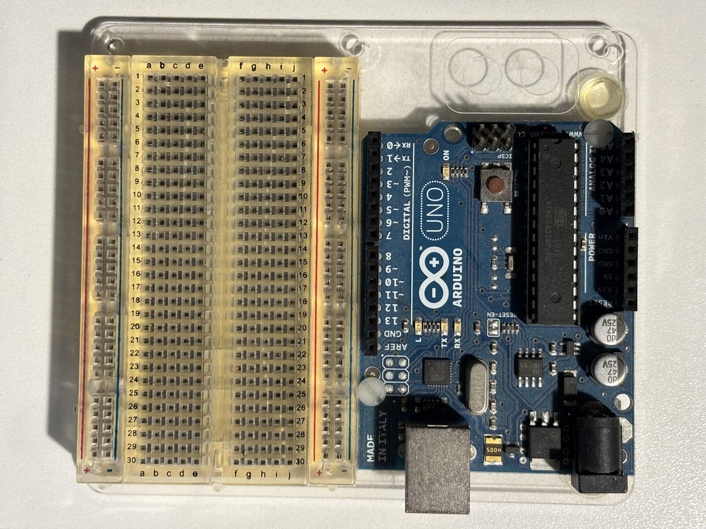

C2
Arduino Uno + 400-point breadboard on a mounting plate
untested×1A genuine Arduino Uno (MADE IN ITALY on the silkscreen)
screwed to a clear plastic base plate alongside a solderless breadboard — the
classic starter-kit mounting plate. The two are held by white plastic screws through the
Uno's mounting holes; the breadboard is stuck down with its own adhesive backing.
- MCU is a socketed DIP-28
ATMEGA328P-PU, date code1016(2010, week 16). 16 MHz, 32 KB flash, 5 V logic. - USB bridge is an Atmel
MEGA8U2in QFN by the USB-B socket, with its own 16 MHz crystal and an unpopulated 2×3 ICSP pad field next to it (RESET-ENis silkscreened beside the main ICSP header). - This is a pre-R3 board. The headers are the old layout: 8+8 pins
on the digital side ending at
GND/AREFwith noSCL/SDApair, and a 6-pinPOWERheader (RESET,3.3V,5V,GND,GND,Vin) with noIOREF. Shields that expect the R3 pinout won't find those pins — I²C is onA4(SDA)/A5(SCL) here. - Headers as fitted: digital
D0–D13+GND+AREF, analogA0–A5, and the 6-pin power header. PWM on3,5,6,9,10,11— six channels, which is what the motor drivers (D2/D3, D4) want. - Power in: USB-B, or the barrel jack through the onboard linear regulator
(7–12 V recommended, two 47 µF/25 V electrolytics on the
rail). The regulator is the weak point on a robot — feed
5Vfrom the buck converter (P1) instead of dropping a 2S LiPo (B2) across it. - 5 V logic pairs directly with the 5 V I²C of the SRF08 (S1) and the MD22 (D1) with no level shifting — the one thing this old board is genuinely better at than the 3.3 V Pi Zero 2 W (C1) that runs the prototype.
- Breadboard: half-size, 30 rows (
a–e/f–j) plus two dual power rails, i.e. the usual 400 tie points. The plastic has yellowed with age; the contacts are unknown.
To verify:
- Plug in USB and confirm it enumerates, then upload Blink — that clears the bootloader, the 8U2 firmware and the USB cable in one go
- Read the bottom silkscreen to pin down the exact revision (R1 vs R2)
- Check the 5 V and 3.3 V rails on the power header under USB power
- Continuity-check the breadboard rails and a few rows — old boards develop dead columns and the rails are often split in the middle
- Measure the base plate outline and its hole pattern before deciding whether to bolt it to the robot deck or print a replacement plate
- Decide its role — the Pi (C1) is the prototype's brain, so this is most useful as a 5 V bench rig for bringing up S1 and the motor drivers off the robot
{kind=link}
